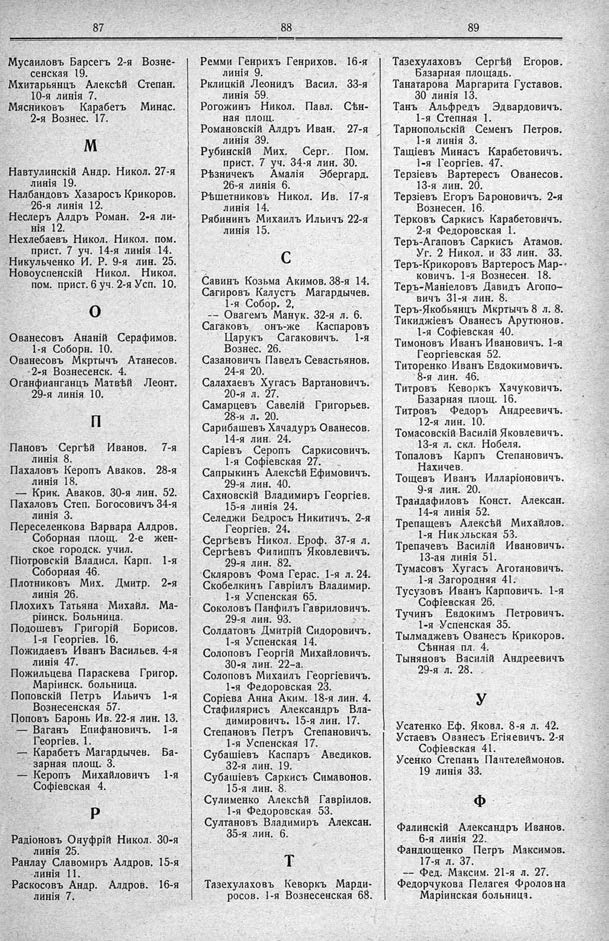

Лист источника 535
Скан

Распознанный текст
87
Мусаиловъ Барсегъ 2-я Вознесенская 19.
Мхитарьянцъ Алексѣй Степан. 10-я линія 7.
Мясниковъ Карабетъ Минас. 2-я Вознес. 17.
М
Навтулинскій Андр. Никол. 27-я линія 19.
Налбандовъ Хазаросъ Крикоров. 26-я линія 12.
Неслеръ Алдръ Роман. 2-я линія 12.
Нехлебаевъ Никол. Никол. пом. прист. 7 уч. 14-я линія 14.
Никульченко И. Р. 9-я лин. 25.
Новоуспенскій Никол. Никол. пом. прист. 6 уч. 2-я Усп. 10.
О
Ованесовъ Ананій Серафимов. 1-я Соборн. 10.
Ованесовъ Мкртычь Атанесов. 2-я Вознесенск. 4.
Оганфианганцъ Матвѣй Леонт. 29-я линія 10.
П
Пановъ Сергѣй Иванов. 7-я линія 8.
Пахаловъ Керопъ Аваков. 28-я линія 18.
-- Крик. Аваков. 30-я лин. 52.
Пахаловъ Степ. Богосовичъ 34-я линія 3.
Переселенкова Варвара Алдров. Соборная площ. 2-е женское городск. учил.
Піотровскій Владисл. Карп. 1-я Соборная 46.
Плотниковъ Мих. Дмитр. 2-я линія 26.
Плохихъ Татьяна Михайл. Маріинск. Больница.
Подошевъ Григорій Борисов. 1-я Георгіев. 16.
Пожидаевъ Иванъ Васильев. 4-я линія 47.
Пожильцева Параскева Григор. Маріинск. больница.
Поповскій Петръ Ильичъ 1-я Вознесенская 57.
Поповъ Баронь Ив. 22-я лин. 13.
-- Ваганъ Епифановичъ. 1-я Георгіев. 1.
-- Карабетъ Магардычев. Базарная площ. 3.
-- Керопъ Михайловичъ 1-я Софіевская 4.
Р
Радіоновъ Онуфрій Никол. 30-я линія 25.
Ранлау Славомиръ Алдров. 15-я линія 11.
Раскосовъ Андр. Алдров. 16-я линія 7.
88
Ремми Генрихъ Генрихов. 16-я линія 9.
Рклицкій Леонидъ Васил. 33-я линія 59.
Рогожинъ Никол. Павл. Сѣнная площ.
Романовскій Алдръ Иван. 27-я линія 39.
Рубинскій Мих. Серг. Пом. прист. 7 уч. 34-я лин. 30.
Рѣзничекъ Амалія Эбергард. 26-я линія 6.
Рѣшетниковъ Никол. Ив. 17-я линія 14.
Рябининъ Михаилъ Ильичъ 22-я линія 15.
С
Савинъ Козьма Акимов. 38-я 14.
Сагировъ Калустъ Магардычев. 1-я Собор. 2.
-- Овагемъ Манук. 32-я л. 6.
Сагаковъ онъ-же Каспаровъ Царукъ Сагаковичъ. 1-я Вознес. 26.
Сазановичъ Павелъ Севастьянов. 24-я 20.
Салахаевъ Хугасъ Вартановичъ. 20-я л. 27.
Самарцевъ Савелій Григорьев. 28-я л. 20.
Сарибашевъ Хачадуръ Ованесов. 14-я лин. 24.
Саріевъ Серопъ Саркисовичъ. 1-я Софіевская 27.
Сапрыкинъ Алексѣй Ефимовичъ. 29-я лин. 40.
Сахновскій Владимиръ Георгіев. 15-я линія 24.
Селеджи Бедросъ Никитичъ. 2-я Георгіев. 24.
Сергѣевъ Никол. Ероф. 37-я л.
Сергѣевъ Филиппъ Яковлевичъ. 29-я лин. 82.
Скляровъ Фома Герас. 1-я л. 24.
Скобелкинъ Гавріилъ Владимир. 1-я Успенская 65.
Соколовъ Панфилъ Гавриловичъ. 29-я лин. 93.
Солдатовъ Дмитрій Сидоровичъ. 1-я Успенская 14.
Солоповъ Георгій Михайловичъ. 30-я лин. 22-а.
Солоповъ Михаилъ Георгіевичъ. 1-я Федоровская 23.
Соріева Анна Аким. 18-я лин. 4.
Стафилярисъ Александръ Владимировичъ. 15-я лин. 17.
Степановъ Петръ Степановичъ. 1-я Успенская 17.
Субашіевъ Каспаръ Аведиков. 32-я лин. 19.
Субашіевъ Саркисъ Симавонов. 15-я лин. 8.
Сулименко Алексѣй Гавріилов. 1-я Федоровская 53.
Султановъ Владимиръ Алексан. 35-я лин. 6.
Т
Тазехулаховъ Кеворкъ Мардиросов. 1-я Вознесенская 68.
89
Тазехулаховъ Сергѣй Егоров. Базарная площадь.
Танатарова Маргарита Густавов. 30 линія 13.
Танъ Альфредъ Эдвардовичъ. 1-я Степная 1.
Тарнопольскій Семенъ Петров. 1-я линія 3.
Тащіевъ Минасъ Карабетовичъ. 1-я Георгіев. 47.
Терзіевъ Вартересъ Ованесов. 13-я лин. 20.
Терзіевъ Егоръ Бароновичъ. 2-я Вознесен. 16.
Терковъ Саркисъ Карабетовичъ. 2-я Федоровская 1.
Теръ-Агаповъ Саркисъ Атамов. Уг. 2 Никол. и 33 лин. 33.
Теръ-Крикоровъ Вартеросъ Марковичъ. 1-я Вознесен. 18.
Теръ-Маніеловъ Давидъ Агоповичъ 31-я лин. 8.
Теръ-Якобьянцъ Мкртычъ 8 л. 8.
Тикиджіевъ Ованесъ Арутюнов. 1-я Софіевская 40.
Тимоновъ Иванъ Ивановичъ. 1-я Георгіевская 52.
Титоренко Иванъ Евдокимовичъ. 8-я лин. 46.
Титровъ Кеворкъ Хачуковичъ. Базарная площ. 16.
Титровъ Федоръ Андреевичъ. 12-я лин. 10.
Томасовскій Василій Яковлевичъ. 13-я л. скл. Нобеля.
Топаловъ Карпъ Степановичъ. Нахичев.
Тощевъ Иванъ Илларіоновичъ. 9-я лин. 20.
Трандафиловъ Конст. Алексан. 14-я линія 52.
Трепащевъ Алексѣй Михайлов. 1-я Никольская 53.
Трепачевъ Василій Ивановичъ. 13-ая линія 51.
Тумасовъ Хугасъ Аготановичъ. 1-я Загородная 41.
Тусузовъ Иванъ Карповичъ. 1-я Софіевская 26.
Тучинъ Евдокимъ Петровичъ. 1-я Успенская 35.
Тылмаджевъ Ованесъ Крикоров. Сѣнная пл. 4.
Тыняновъ Василій Андреевичъ 29-я л. 28.
У
Усатенко Еф. Яковл. 8-я л. 42.
Устаевъ Ованесъ Егіяевичъ. 2-я Софіевская 41.
Усенко Степанъ Пантелеймонов. 19 линія 33.
Ф
Фалинскій Александръ Иванов. 6-я линія 22.
Фандющенко Петръ Максимов. 17-я л. 37.
-- Фед. Максим. 21-я л. 27.
Федорчукова Пелагея Фролов на Маріинская больница.